1. Einführung
Der Smart-ÖPNV Planer ist die zentrale Windows-Anwendung zur Pflege aller Fahrdaten, die an die Android-App GPSAnsagen auf den Bussen übertragen werden. Er ergänzt die Leitstellen-App und dient Disponenten, Fahrplanbearbeitern und Verwaltung.
Hauptaufgaben
- Routen, Haltestellen, Ansagen und Fahrwege (Navidaten) pflegen
- Fahrer- und Fahrzeugdisposition planen (inkl. FPersV-Prüfung)
- Dienstvorlagen aus Fahrplänen erstellen und als PDF exportieren
- Personal, Fahrzeuge, Mängelkarte und Dokumentenfristen verwalten
- SEV-Schilder (NRW), Ziellisten und Hinweise erstellen
- Daten per Dropbox oder JSON an Fahrzeuge senden
Systemvoraussetzungen
- Windows 10 oder neuer (64 Bit)
- Kein separates .NET nötig bei Installation über
Setup-Smart-OEPNV-Planer-x64.exe(self-contained) - Internet für Dropbox-Synchronisation
- Empfohlen: Bildschirmauflösung mindestens 1280×720, besser Full HD
2. Installation & erste Schritte
Setup-Smart-OEPNV-Planer-x64.exeausführen (liegt im Ordnerdist\nach dem Build).- Installationsassistent durchlaufen – Standardpfad:
C:\Program Files\Smart-OEPNV\Planer - Optional: Desktop-Verknüpfung anlegen und Programm direkt starten.
- Beim ersten Start zuerst Dropbox einrichten (siehe Kapitel 4), danach mit Planer-Zugang anmelden.
Benutzerdaten werden unter %AppData%\Smart-OEPNV\Planer gespeichert – nicht im Programmordner.
3. Anmeldung & Sperre
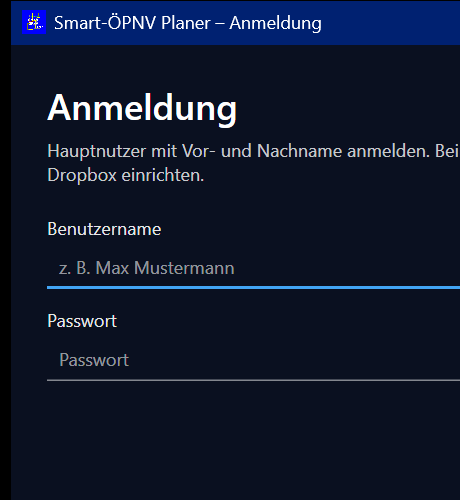
Nach dem Start erscheint das Hauptfenster mit einem Anmeldedialog. Es kann sich nur ein Planer-Nutzer gleichzeitig anmelden (Sperre über Dropbox planer_session.json).
Anmeldedaten
- Planer-Zugang wird in der Personalverwaltung pro Mitarbeiter vergeben (Rolle „Planer“, Benutzername und Passwort).
- Benutzername und Passwort case-sensitiv eingeben.
Buttons im Anmeldedialog
| Button | Funktion |
|---|---|
| Anmelden | Prüft Zugang, synchronisiert Arbeitsstand, öffnet Planer |
| Abbrechen | Beendet das Programm |
| Dropbox einrichten… | Öffnet Einstellungen vor der Anmeldung |
| Sperre freigeben (Hauptnutzer)… | Nur sichtbar wenn anderer Nutzer gesperrt hat |
Nach erfolgreicher Anmeldung erscheint kurz der Dialog „Wir synchronisieren kurz.“ – Arbeitsstand wird mit Dropbox abgeglichen.
Abmelden: Symbol oben rechts (Logout). Dabei wird gespeichert, hochgeladen und die Sperre freigegeben.
4. Dropbox & Synchronisation
Der Planer nutzt Dropbox für zwei getrennte Zwecke:
| Datei | Inhalt | Wann |
|---|---|---|
planer_workspace.json | Kompletter Arbeitsstand (Routen, Mitarbeiter, Einstellungen …) | Automatisch bei Login, Logout, Beenden |
routes_export.json | Routen-Paket für GPSAnsagen-Apps | Manuell über Versand |
Dropbox verbinden
- Einstellungen öffnen (Zahnrad oder Navigationspunkt Einstellungen).
- Mit Dropbox verbinden – Browser-Anmeldung bestätigen.
- Ordnerpfad prüfen (Standard:
/App/Smart ÖPNV) und Ordnerpfad speichern. - Verbindung testen zur Kontrolle.
5. Oberfläche & Navigation
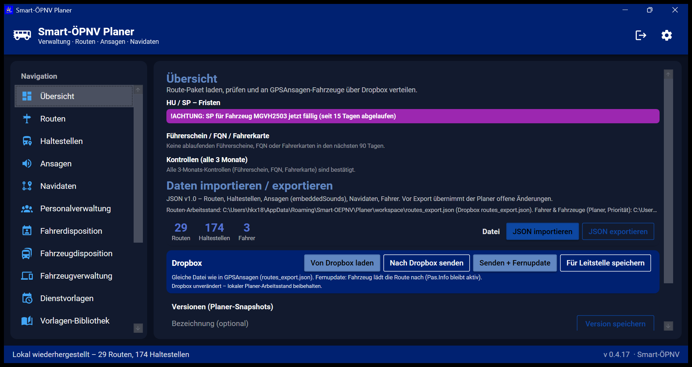
| Bereich | Beschreibung |
|---|---|
| App-Leiste (oben) | Produktname, Untertitel, Logout, Einstellungen (Zahnrad) |
| Navigation (links) | Wechsel zwischen allen Modulen; gelbe Badges bei offenen Aufgaben |
| Inhaltsbereich | Aktuell gewähltes Modul |
| Statusleiste (unten) | Meldungen links, Versionsnummer rechts |
Navigationspunkte (von oben nach unten)
- Übersicht · Routen · Haltestellen · Ansagen · Navidaten
- Personalverwaltung · Fahrerdisposition · Fahrzeugdisposition · Fahrzeugverwaltung
- Dienstvorlagen · Vorlagen-Bibliothek · Nachrichten
- Anzeigen & Hinweise · SEV-Schilder · Zeitwirtschaft · Versand · Einstellungen
Beim Wechseln zwischen Bereichen werden offene Änderungen automatisch gespeichert.
6. Übersicht (Dashboard)
Warnhinweise (klickbar)
- HU / SP – Fristen → springt zur Fahrzeugverwaltung
- Führerschein / FQN / Fahrerkarte → Personalverwaltung (90-Tage-Vorlauf)
- Kontrollen (alle 3 Monate) → Personalverwaltung (Führerschein-, FQN-, Fahrerkartenkontrolle)
Die Übersicht enthält dieselben Import-/Export-Funktionen wie der Bereich Versand (siehe Kapitel 21).
7. Routen
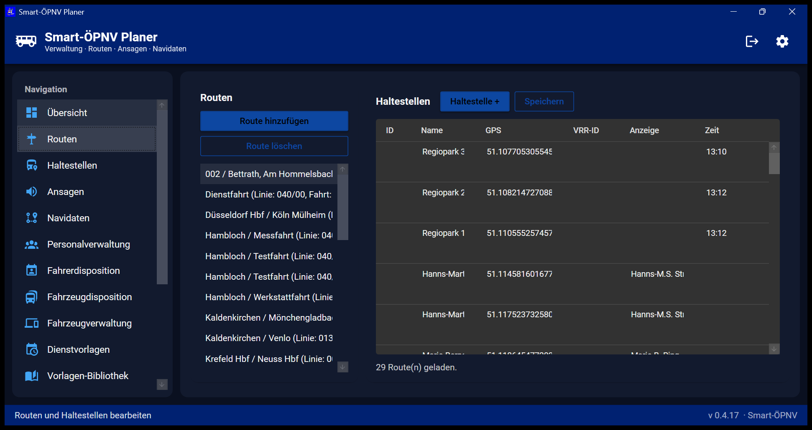
Hier legen Sie Fahrtrouten an und pflegen die Haltestellenreihenfolge pro Route.
| Aktion | Beschreibung |
|---|---|
| Route hinzufügen | Neue Route anlegen (Name, Linie/Kurs) |
| Route löschen | Ausgewählte Route entfernen |
| Haltestelle + | Haltestelle zur Route hinzufügen |
| Speichern | Haltestellen sofort lokal sichern |
| ✕ (Zeile) | Einzelne Haltestelle aus Route entfernen |
Spalten: Haltestellen-ID, Name, GPS-Koordinaten, VRR-ID, Anzeigetext, Zeit.
8. Haltestellenbibliothek
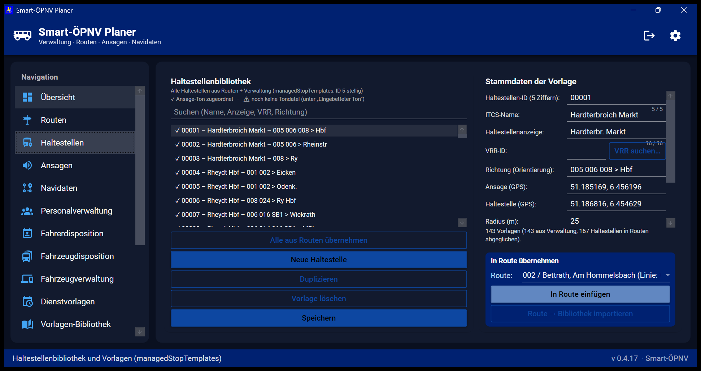
Zentrale Sammlung aller Haltestellen-Vorlagen – unabhängig von einzelnen Routen.
- Alle aus Routen übernehmen – importiert Haltestellen aus bestehenden Routen
- Neue Haltestelle / Duplizieren / Vorlage löschen
- In Route einfügen / Route → Bibliothek importieren
- VRR suchen… – Haltestelle aus VRR-Daten übernehmen
- Ton: Aus Liste wählen…, Mehrere zusammenfügen…, Datei wählen…
Stammdaten: 5-stellige Haltestellen-ID, ITCS-Name, Anzeige, GPS (Ansage/Haltestelle), Radius, eingebetteter Ton.
9. Ansagen-Kartei
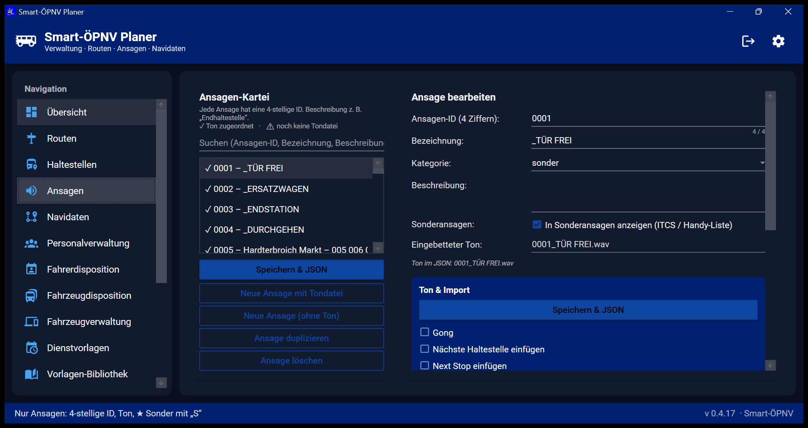
Verwaltung aller Fahrzeugansagen (Tondateien, Sequenzen, Sonderansagen).
- Neue Ansage mit Tondatei / ohne Ton
- Sequenz: Gong, „Nächste Haltestelle“, „Next Stop“, Pausen, Reihenfolge mit ↑/↓
- Vorschau abspielen – Test der Sequenz am PC
- Aus Routen importieren / Aus embeddedSounds importieren
- Speichern & JSON – sichert und schreibt in Exportdatei
11. Personalverwaltung
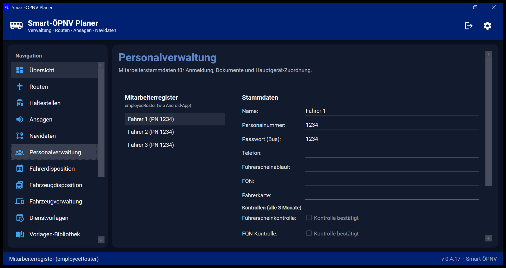
- Mitarbeiter hinzufügen / Auswahl löschen / Speichern
- Stammdaten: Name, Personalnummer, Bus-Passwort, Telefon, Führerscheinablauf, FQN, Fahrerkarte
- 3-Monats-Kontrollen: Führerschein, FQN, Fahrerkarte – mit Ablaufdatum und Kontrolle bestätigt
- Rollen: App (Handy/Tablet) als Hauptnutzer am Bus · Planer mit eigenem Login
12. Fahrerdisposition
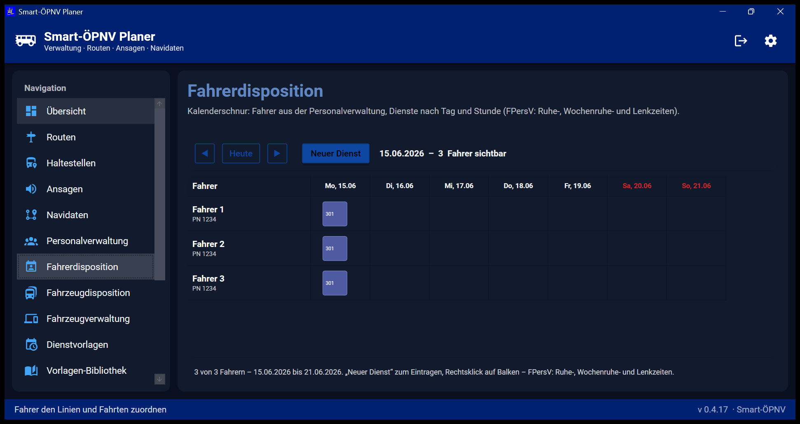
Toolbar
- ◀ / ▶ – Woche wechseln · Heute – aktuelle Woche
- Neuer Dienst – Dienst eintragen oder bearbeiten
- Klick auf Fahrernamen → Personalverwaltung
Dialog „Neuer Dienst“
- Fahrer, optional Dienstvorlage aus Bibliothek, Dienstnummer, Datum/Zeiten
- Geteilter Dienst: Arbeitsteil 1 + Pause (mind. 2 h) + Arbeitsteil 2, eine Dienstnummer
- FPersV-Optionen: Ruhezeit 9 h, Lenkzeit 10 h, Wochenruhe 24 h
- Geteilte Dienste: max. 14 h Dienstschicht (Beginn Teil 1 bis Ende Teil 2); Lenkzeit/Ruhe separat nach FPersV
- Alle Teile einzeln disponieren – für getrennte Vorlagen-Teile (301 + 302)
Speichern erfolgt beim Schließen des Dialogs; Disposition wird automatisch beim Verlassen des Bereichs gesichert.
13. Fahrzeugdisposition
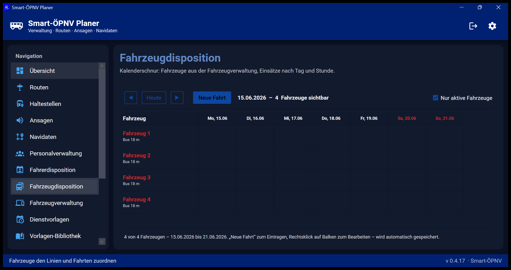
Entspricht der Fahrerdisposition, bezogen auf Fahrzeuge statt Fahrer.
- Neue Fahrt – Fahrzeug, Fahrtname, Datum und Uhrzeit von/bis
- Nur aktive Fahrzeuge – Filter in der Kalenderansicht
14. Fahrzeugverwaltung
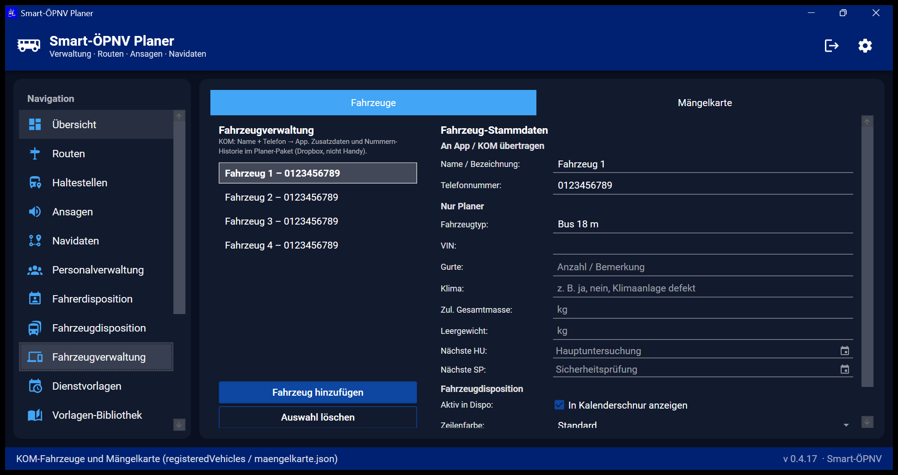
Tab Fahrzeuge
- KOM-Daten (an App): Name, Telefonnummer
- Planer-Daten: Typ, FIN, Gurte, Klima, Masse, HU/SP-Termine
- In Kalenderschnur anzeigen – Fahrzeug in Disposition sichtbar
Tab Mängelkarte
- Aus Dropbox laden / Aus Ordner laden / Nach Dropbox speichern
- Status: Neu → In Bearbeitung → Erledigt
- Badge in Navigation bei neuen Einträgen
15. Dienstvorlagen
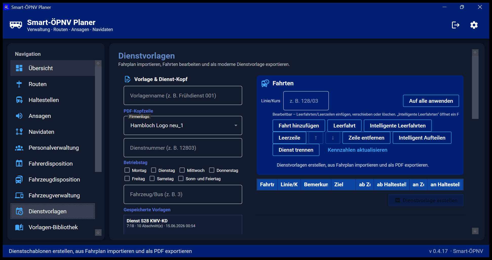
Workflow
- Vorlagenname, Firmenlogo (für PDF), Dienstnummer, Betriebstag, Fahrzeug eintragen
- Fahrplan-Datei öffnen… (Excel, PDF, CSV) – Fahrten auswählen und übernehmen
- Fahrten bearbeiten, Intelligente Leerfahrten ergänzen
- Bei langen Diensten: Intelligent Aufteilen (max. 9 h pro Teil) oder Dienst trennen
- Kennzahlen aktualisieren – Dienstlänge, Lohnstunden, Pausen, Lenkzeit
- Speichern / Dienstvorlage erstellen (PDF)
Bei geteiltem Dienst: separate PDF-Buttons für Teil 1, 2, 3.
16. Vorlagen-Bibliothek
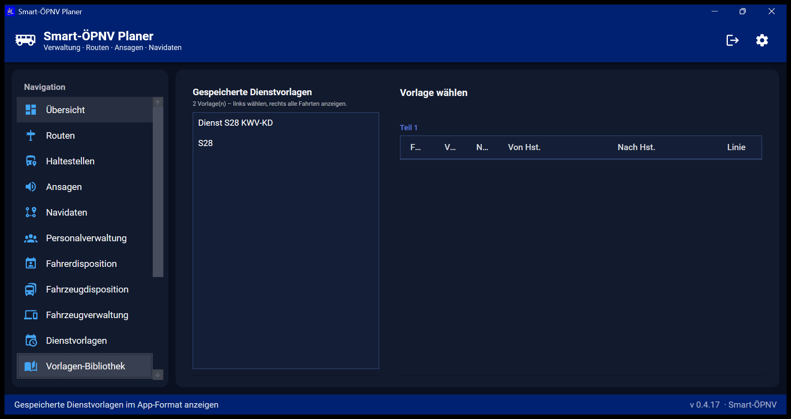
Übersicht aller gespeicherten Dienstvorlagen. Links die Liste, rechts die Fahrt-Details (Teil 1–3). Vorlagen können in der Fahrerdisposition als Ausgangsbasis gewählt werden.
17. Nachrichten
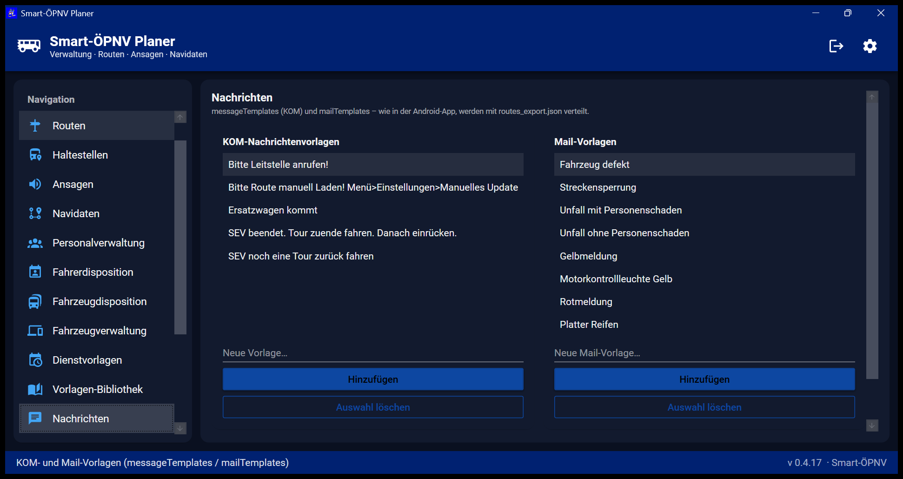
- KOM-Nachrichtenvorlagen – Textbausteine für Fahrzeugkommunikation
- Mail-Vorlagen – Vorlagen für E-Mail-Versand
- Speichern – alle Vorlagen sichern
18. Anzeigen & Hinweise
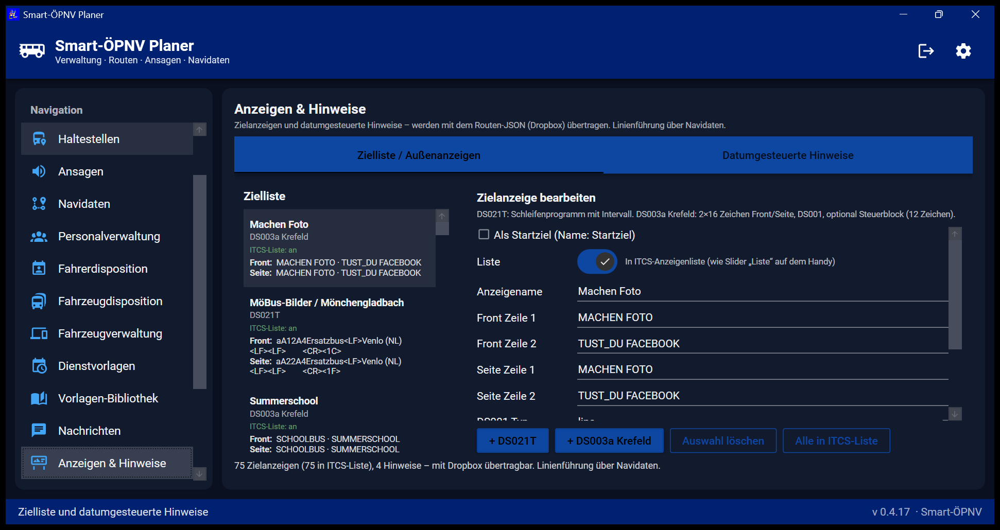
Tab Zielliste / Außenanzeigen
DS021T- und DS003a-Einträge für ITCS-Anzeigen: Front/Seite, DS001, Intervalle, Steuerblock.
Tab Datumgesteuerte Hinweise
Texte mit Start- und Enddatum für zeitlich begrenzte Fahrgastinformationen.
19. SEV-Schilder (NRW)
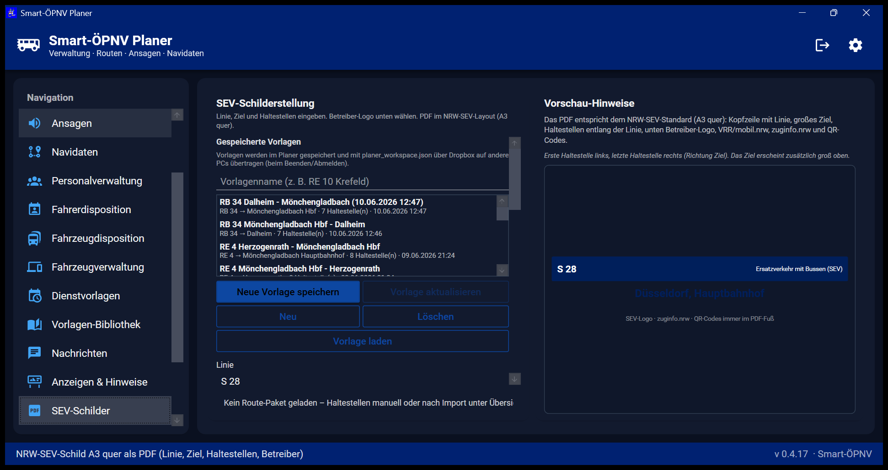
Erstellung von Ersatzverkehrsschildern im NRW-A3-Querformat.
- Linie, Ziel, Haltestellen aus Route übernehmen, Richtung umkehren
- Betreiber-Logos, QR-Codes im PDF-Fuß
- PDF erstellen… – Druckfertige Ausgabe
- Vorlagen speichern, laden, aktualisieren
20. Zeitwirtschaft
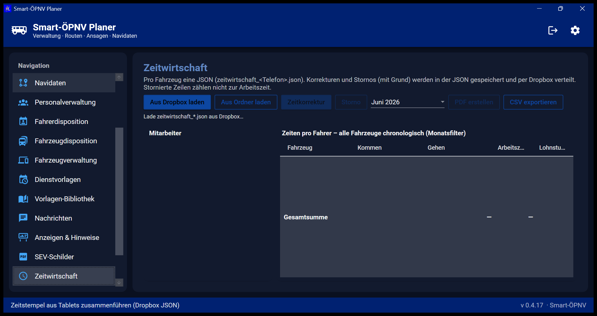
- Aus Dropbox laden / Aus Ordner laden – Stempeldaten der Fahrer
- Monatsfilter, Zeitkorrektur, Storno
- PDF erstellen / CSV exportieren
- Spalten: Fahrzeug, Kommen, Gehen, Arbeitszeit, Lohnstunden
21. Versand & Versionen
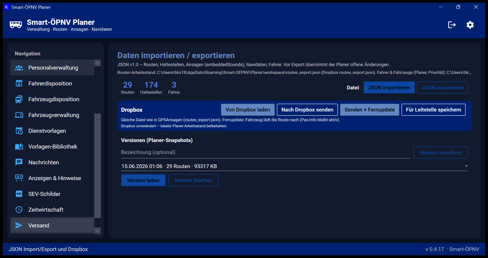
Lokale Dateien
JSON importieren / JSON exportieren – Format JSON v1.0 (exportType: routes).
Dropbox (an Fahrzeuge)
| Button | Wirkung |
|---|---|
| Von Dropbox laden | routes_export.json vom Server holen |
| Nach Dropbox senden | Aktuelle Routen hochladen |
| Senden + Fernupdate | Upload + Anstoß zum Neuladen auf dem Fahrzeug (während Fahrt, Fahrgastinfo bleibt) |
| Für Leitstelle speichern | leitstelle_stand.json für Leitstellen-App |
Versionen (Planer-Snapshots)
Mit Version speichern einen benannten Stand sichern; später Version laden oder löschen.
22. Einstellungen
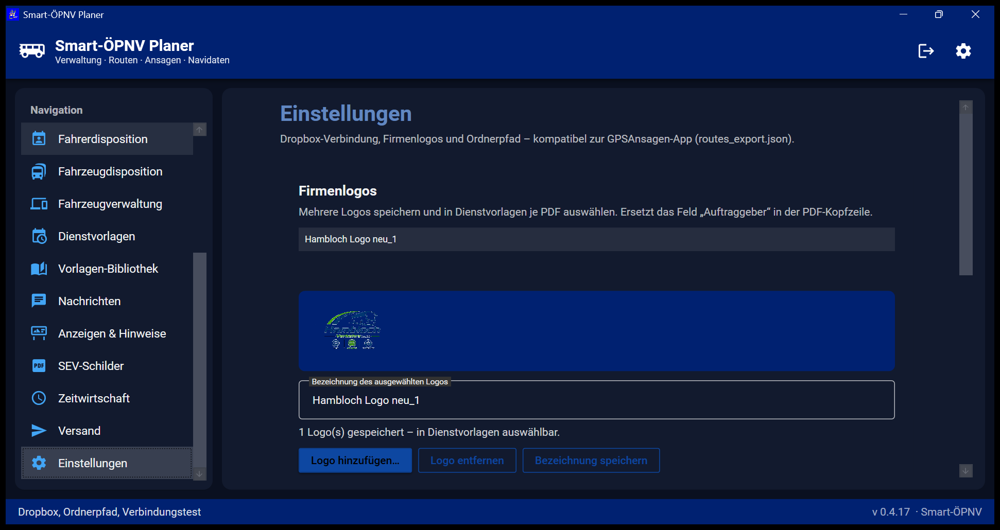
- Dropbox verbinden / trennen / testen, Ordnerpfad
- Firmenlogos – für Dienstvorlagen-PDF: hinzufügen, benennen, entfernen
- Verbindungstest mit Datei- und Ordnerinformationen
23. Backup & Dateipfade
| Inhalt | Pfad |
|---|---|
| Programm | C:\Program Files\Smart-OEPNV\Planer |
| Benutzerdaten | %AppData%\Smart-OEPNV\Planer |
| Fahrer, Fahrzeuge, Disposition | workspace\planner_local_roster.json |
| Routen-Paket | workspace\routes_export.json |
| Automatische Versionen | workspace\backups\ |
| Firmenlogos | workspace\branding\ |
Gesamt-Backup: Skript Backup-All-SmartOepnv.ps1 im Projektordner (siehe BACKUP-ANLEITUNG.md).
Screenshots aktualisieren
Die Abbildungen in dieser Anleitung können mit folgendem Befehl neu erzeugt werden:
powershell -ExecutionPolicy Bypass -File docs\screenshots\Capture-PlanerScreenshots.ps1
24. Glossar
| Begriff | Bedeutung |
|---|---|
| GPSAnsagen | Android-App auf dem Bus (Ansagen, GPS, ITCS-Anbindung) |
| KOM | Kommunikation Fahrzeug ↔ Leitstelle/Planer |
| ITCS | Fahrzeugrechner / Innen- und Außenanzeigen |
| FPersV | Fahrpersonalverordnung (Lenk- und Ruhezeiten) |
| HU / SP | Hauptuntersuchung / Sicherheitsprüfung am Fahrzeug |
| FQN | Fahrerqualifikationsnachweis |
| SEV | Schienenersatzverkehr |
| Leerfahrt | Fahrt ohne Fahrgäste zwischen Einsatzorten |
| Geteilter Dienst | Ein Dienst mit Pause (Dispositions-Checkbox), nicht Vorlagen-Teilung |
| Fernupdate | Routen-Neuladen auf dem Bus ohne Neustart der App |